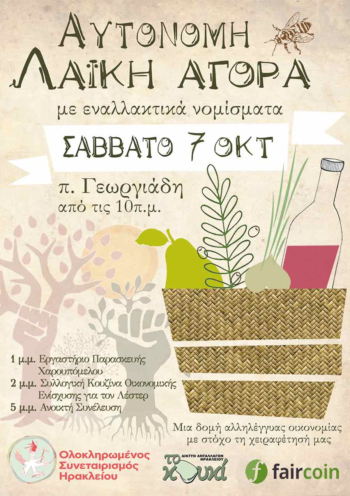
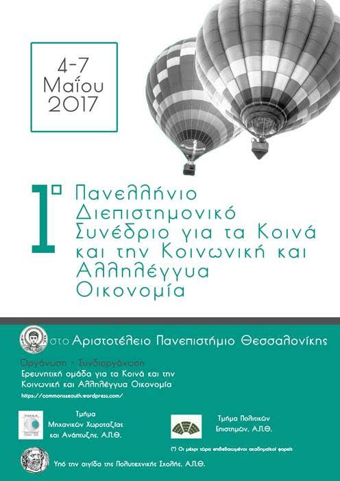
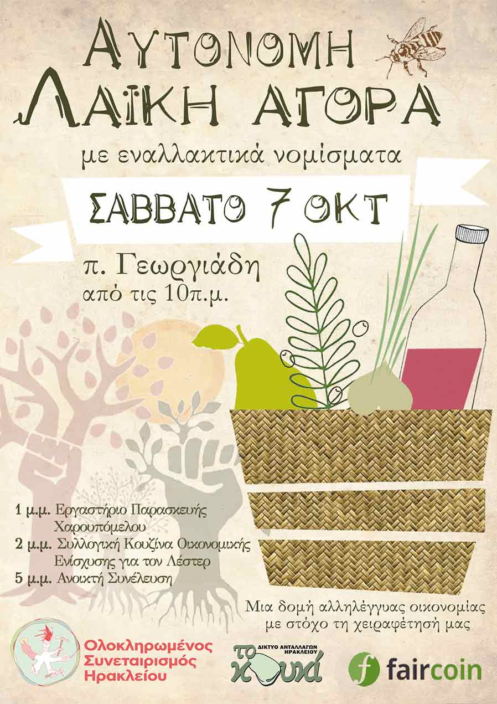
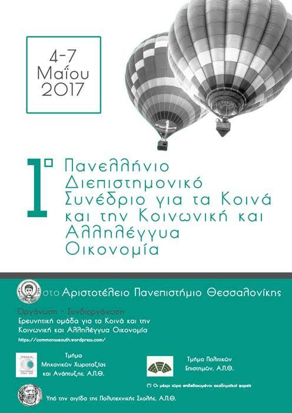

george dafermos
home on the web
upcoming events

Αυτόνομη Λαϊκή (Ο.Σ.Η.)
20 Μαΐου 2017
Ηράκλειο, Ελλάδα

Συνέδριο για τα Κοινά και την ΚΑΛΟ
4-7 Μαΐου 2017
Θεσσαλονίκη, Ελλάδα
UniverSSE 2017
june 9-11, 2017
athens, greece

george dafermos |
home on the web |
upcoming events  Αυτόνομη Λαϊκή (Ο.Σ.Η.) 20 Μαΐου 2017 Ηράκλειο, Ελλάδα  Συνέδριο για τα Κοινά και την ΚΑΛΟ 4-7 Μαΐου 2017 Θεσσαλονίκη, Ελλάδα UniverSSE 2017 june 9-11, 2017 athens, greece |
|||
|
|||||